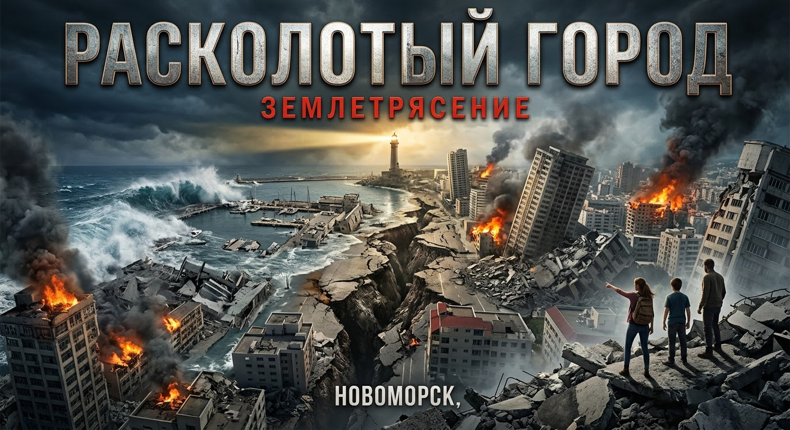

45 секунд ада
Первичная волна достигла города за доли секунды. Асфальт вздыбался огромными волнами, спальные районы складывались этаж за этажом.
Масштабный роман о выживании, человечности и надежде в эпицентре катастрофы силой 8.5 баллов.

Трагедия началась не с удара, а с глубокого, утробного гула, исходившего из недр земли. Тектоническая плита, копившая колоссальное напряжение более двухсот лет, внезапно лопнула. Магнитуда составила разрушительные 8.5 баллов по шкале Рихтера.
Первичная волна достигла города за доли секунды. Асфальт вздыбался огромными волнами, спальные районы складывались этаж за этажом.
Смещение почвы разорвало газопроводы. За десять минут вспыхнуло 400 крупных пожаров, слившихся в огненные смерчи.
Сдвиг морского дна спровоцировал оползень. На портовый район обрушилась стена воды высотой 5 метров.
В момент удара находится в бункере Центра мониторинга. Она единственная понимает истинный масштаб произошедшего. Ее цель — найти дочь-подростка.
Выбравшись из метро на поверхность, он видит свой район в руинах. Отказавшись паниковать, прокладывает путь через горящие кварталы.
Оказалась запертой на минус третьем этаже ТЦ. В условиях паники внезапно находит в себе волю к жизни, беря на себя лидерство.
Новоморск гудит и строится ввысь. Елена тщетно пытается достучаться до мэрии. Андрей готовится к концу смены. Читатель чувствует нарастающее напряжение от странного поведения природы: аномальный отлив и пугающая тишина птиц. Город живет свои последние спокойные часы, не подозревая о надвигающейся катастрофе.
В 08:14 утра происходит сокрушительный удар. 45 секунд ада стирают привычный мир. Мосты переламываются пополам, бетонные высотки рассыпаются в пыль, связь исчезает. Люди оказываются заперты под землей. Новоморск мгновенно погружается в первобытный хаос.
Город покрыт густым токсичным дымом. Начинается жестокая борьба за ресурсы. Полиции больше нет, на улицах властвуют мародеры. Андрей с небольшой группой пробирается через горящие руины, постоянно делая тяжелый моральный выбор. Под землей Катя делит остатки воды и пытается сохранить человеческий облик выживших.
Из рухнувшего торгового центра пробивается слабый сигнал SOS. Андрей принимает решение спуститься в смертельно опасный, осыпающийся кратер. Елена, найдя связь, координирует его действия по памяти чертежей. Начинается гонка со временем на фоне надвигающегося мощного афтершока.
Группа Андрея, используя систему альпинистских полиспастов, успевает вытащить Катю и еще девятнадцать человек на поверхность за сто двадцать секунд до того, как подземные уровни «Атриума» с оглушительным ревом окончательно схлопываются, хороня под собой все тайны и надежды.
Эвакуированные доставляются в полевой госпиталь, где происходит горькое воссоединение Кати с матерью. Но Андрей идет дальше. Он доходит до места, где стоял его дом, находя лишь уродливую гору спрессованного бетона.
Спасатель, вернувший жизни десяткам людей, медленно опускается на колени. Он спас чужие миры, но навсегда потерял свою вселенную.
Роман завершается масштабной панорамой руин Новоморска в лучах багрового заката. Город навсегда мертв и превращен в братскую могилу. Однако в глазах людей, прошедших сквозь кромешный ад, загорается новая, суровая искра жизни. Они доказали главную истину: земля может треснуть, бетон может раскрошиться в пыль, но истинную человеческую волю расколоть невозможно.